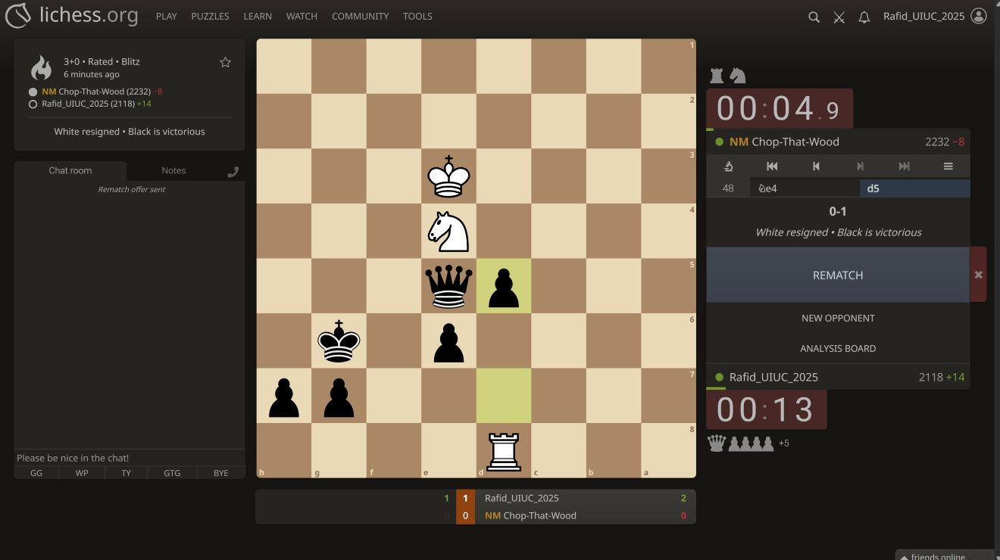
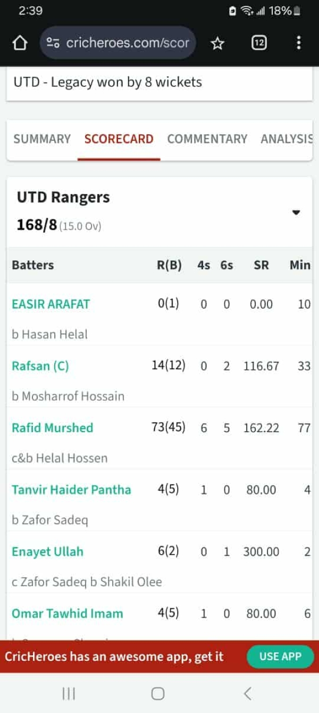

Chess
I enjoy chess for the same reasons I enjoy research: structured thinking, long-horizon planning, and creative problem solving under constraints.
Beyond research
A small personal corner of the website: strategy, sports, and creative resets that keep research life balanced.

I enjoy chess for the same reasons I enjoy research: structured thinking, long-horizon planning, and creative problem solving under constraints.

Cricket has been one of my favorite ways to stay connected with friends, teamwork, and the competitive energy I grew up with.